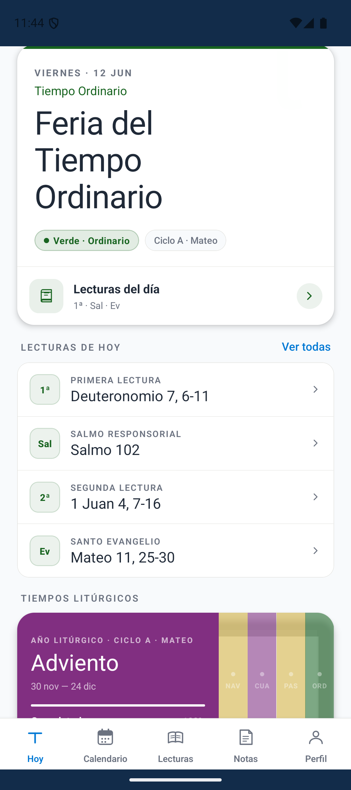
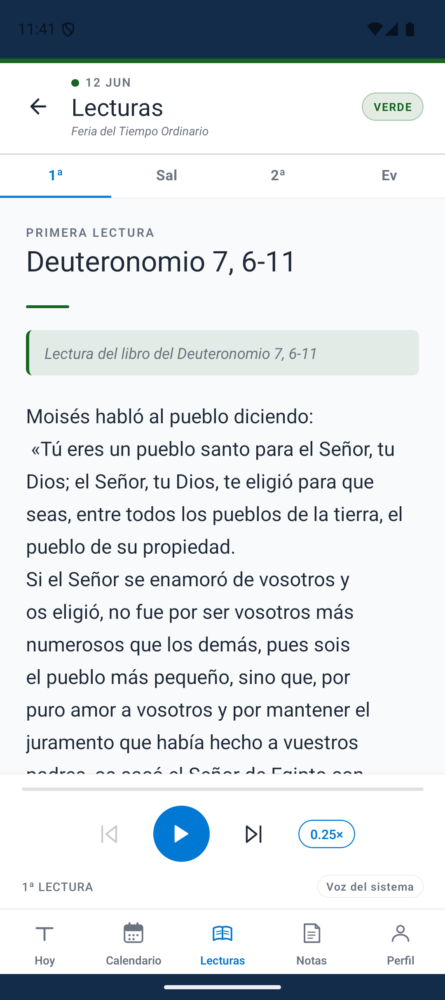
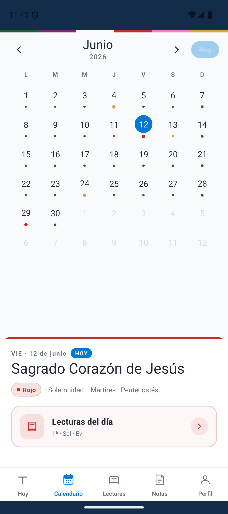

τau Litúrgico te acompaña con el calendario litúrgico, las lecturas del día con audio y un espacio para tus reflexiones personales.
Disponible para Android e iOS · Sin publicidad · Gratuita
Funciones
Consulta el tiempo litúrgico, el color del día, las fiestas y solemnidades del año de la Iglesia, calculadas dinámicamente para cada año.
Accede a la Primera Lectura, Salmo Responsorial, Segunda Lectura y Santo Evangelio de cada día, con escucha en audio y resaltado de palabras.
Escucha las lecturas con síntesis de voz de alta calidad. Ajusta la velocidad y elige entre voces disponibles en tu dispositivo o vía ElevenLabs.
Escribe tus reflexiones personales vinculadas a las lecturas del día. Consulta los textos directamente desde cada nota guardada.
Configura una notificación diaria para que no olvides la lectura del día. Tú eliges la hora.
Diseño cuidado con tipografía Cormorant Garamond, modo claro y oscuro, y tamaño de texto ajustable para una lectura cómoda en cualquier momento.
Capturas


